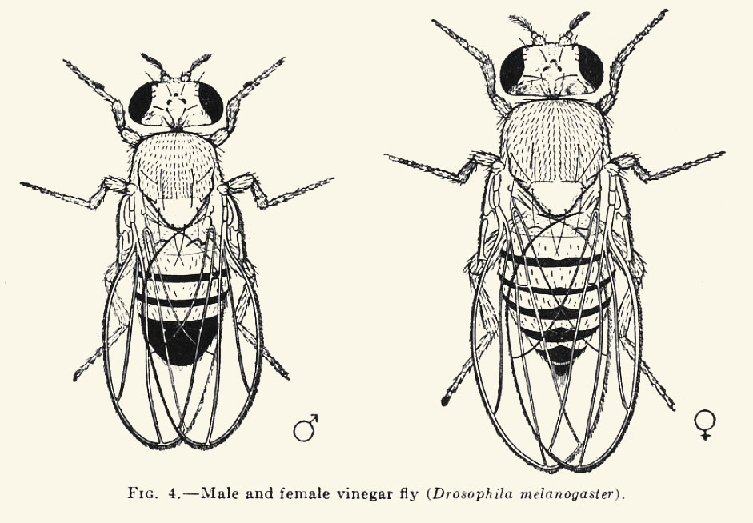
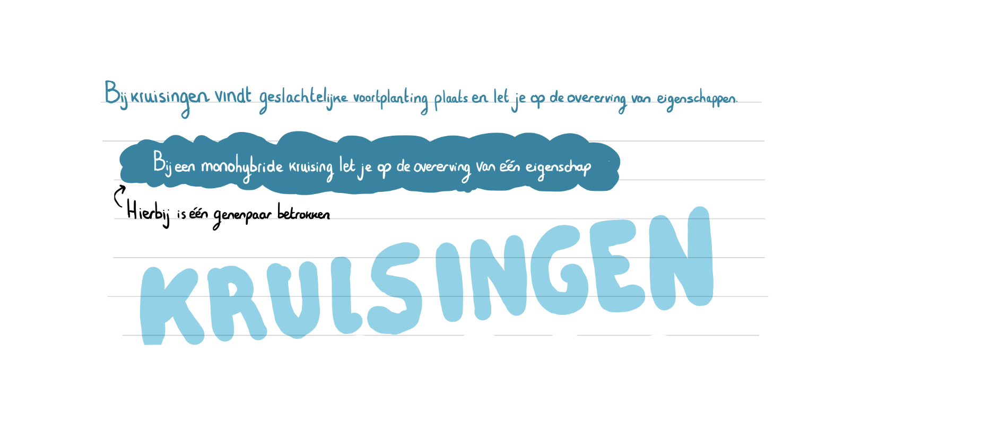
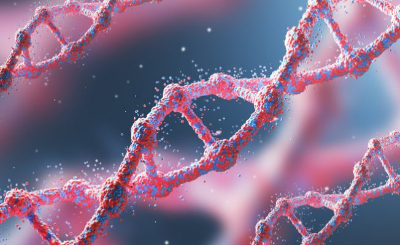
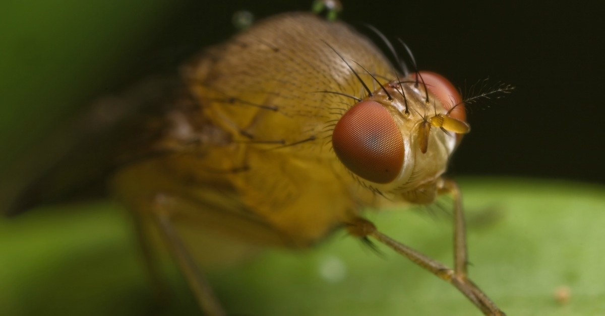

Fruitvliegjes
Veel kennis in de genetica is opgedaan door kruisingen uit te voeren. Fruitvliegjes zijn geschikte modelorganismen voor deze proeven. Ze zijn gemakkelijk te kweken en van elkaar te onderscheiden. Ook vertonen fruitvliegjes groten verschillen in hun fenotype.
Kruisingsvraagstukken
Een kruisingsvraagstuk los je in stappen op
- Wat zijn de genotypen van de ouders?
- Welke allelen kunnen de geslachtscellen bevatten?
- Welke mogelijkheden bestaan er voor de versmelting van een eicelkern en een zaadcelkern?
- Maak een kruisingsschema


